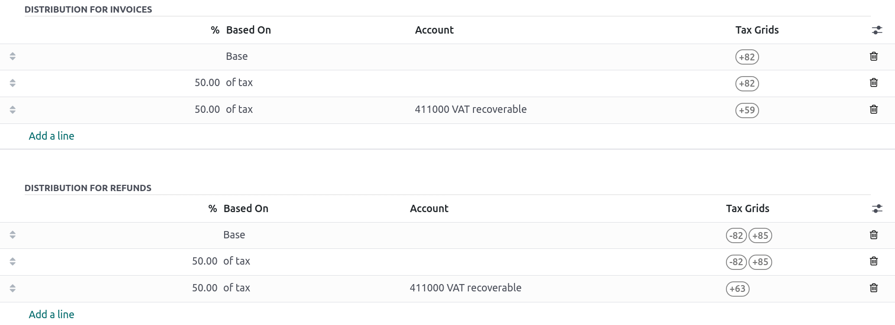
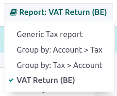
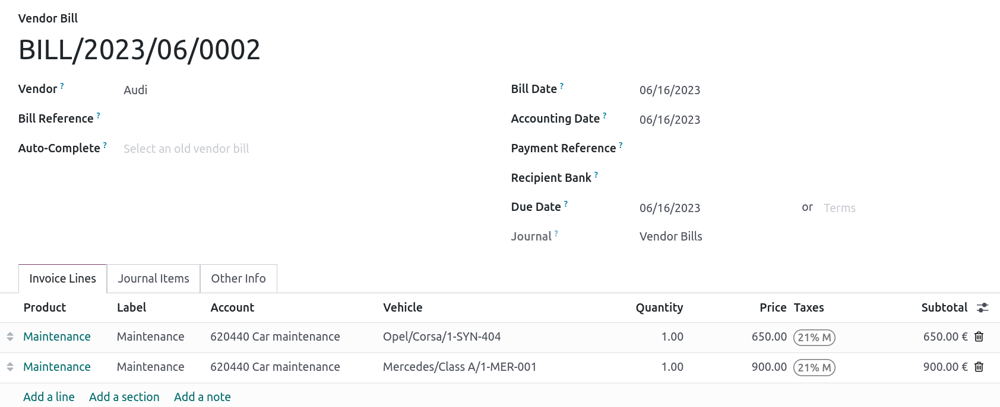

Belgium
Configuration
Install the Belgium fiscal localization package to get all the default accounting features of the Belgian localization, following the IFRS rules.
Chart of accounts
You can reach the Chart of accounts by going to .
The Belgian chart of accounts includes pre-configured accounts as described in the PCMN. To add a new account, click New. A new line appears. Fill it in, click Save, and then Setup to configure it further.
See also
Taxes
Default Belgian taxes are created automatically when the Belgium - Accounting and the Belgium - Accounting Reports modules are installed. Each tax impacts the Belgian Tax Report, available by going to .
In Belgium, the standard VAT rate is 21%, but there are lower rates for some categories of goods and services. An intermediate rate of 12% is applied on social housing and food served in restaurants, while a reduced rate of 6% applies to most basic goods, such as food, water supply, books, and medicine. A 0% rate applies to some exceptional goods and services, such as some daily and weekly publications, as well as recycled goods.
Non-deductible taxes
In Belgium, some taxes are not fully deductible, such as taxes on the maintenance of cars. This means a part of these taxes is considered as an expense.
In Odoo, you can configure non-deductible taxes by creating tax rules for these taxes and linking them to the corresponding accounts. This way, the system automatically calculates the taxes and allocates them to the appropriate accounts.
To configure a new non-deductible tax, go to , and click New:
Add a line and select Base in the Based On column;
Add a line, then select on tax in the Based on column and enter the non-deductible percentage in the % column;
On the of tax line, select the Tax Grid(s) related to your tax;
Add a line with the deductible percentage in the % column;
Set of tax in Based On;
Select 411000 VAT recoverable as account, and select the related tax grid.
Once you have created a non-deductible tax, you can apply it to your transactions by selecting the appropriate tax during the encoding of bills and credit notes. The system automatically calculates the tax amount and allocates it to the corresponding accounts based on the tax rules configured.
Example
With the Belgian localization, the 21% car tax is created by default (50% non-deductible).
See also
Reports
Here is the list of Belgian-specific reports available:
Balance sheet;
Profit & loss;
Tax report;
Partner VAT Listing;
EC Sales List;
Intrastat.
You can access Belgian-specific versions of reports by clicking on the book icon when on a report and selecting its Belgian version: (BE).
See also
Disallowed expenses report
Disallowed expenses are expenses that can be deducted from your accounting result but not from your fiscal result.
The disallowed expenses report is available by going to . It allows financial results in real-time, and periodic changes. This report is generated based on the disallowed expenses categories that you can reach by going to . Some categories already exist by default but do not have any rates. Click on Set Rates to update a specific category.
Tip
You can add multiple rates for various dates. In that case, the rate used to calculate the expense depends on the date at which it is calculated, and the rate set for that date.
If you have the Fleet app installed, tick the Car Category box when applicable. This makes the vehicle mandatory while booking a vendor bill.
To link a disallowed expenses category with a specific account, go to . Find the account you want, and click on Setup. Add the Disallowed Expense category in the Disallowed Expenses field. From now, when an expense is created with this account, the disallowed expense is calculated based on the rate mentioned in the Disallowed Expense category.
Lets take an example reflecting restaurant and car expenses.
Restaurant expenses
In Belgium, 31% of restaurant expenses are non-deductible. Create a new disallowed expenses category and set both Related Account(s) and Current Rate.

Car expenses: vehicle split
In Belgium, the deductible percentage varies from car to car and, therefore, should be indicated for each vehicle. To do so, open and select a vehicle. In the Tax info tab, go to the Disallowed Expenses Rate section and click on Add a line. Add a Start Date and a %. The amounts go in the same account for all car expenses.
When you create a bill for car expenses, you can link each expense to a specific car by filling the Vehicle column, so the right percentage is applied.
The vehicle split option available in the disallowed expenses report allows you to see the rate and disallowed amount for each car.

Fee form 281.50 and form 325
Fee form 281.50
Annually, a 281.50 fee form must be reported to the fiscal authorities. To do so, the tag
281.50 must be added on the contact form of the entities concerned by the 281.50 fee. To
add the tag, open , select the person or company you want to create a
281.50 fee form for, and add the 281.50 tag in the Tags field.

Note
Make sure the street, zip code, country, and VAT number are also informed on the Contact form.
Then, depending on the nature of the expense, add the corresponding 281.50 tag on the impact
accounts. To do so, go to , and click on Setup to add the corresponding 281.50 tag on the impacted
accounts, i.e., 281.50 - Commissions, depending on the nature of the expense.
Form 325
You can create a 325 form by going to . A new page pops up: select the right options and click Generate 325 form. To open an already generated 325 form, go to .

CODA and SODA statements
CODA
CODA is an electronic XML format used to import Belgian bank statements. You can download CODA files from your bank and import them directly into Odoo by clicking Import file from your Bank journal on your dashboard.

See also
SODA
SODA is an electronic XML format used to import accounting entries related to salaries. SODA files can be imported into the journal you use to record salaries by going to your Accounting dashboard and clicking Upload in the related journal card form.
Once your SODA files are imported, the entries are created automatically in your salary journal.
CodaBox
CodaBox is a service that allows Belgian accounting firms to access their clients bank information and statements. Odoo provides a way to import such statements automatically.
Note
As an accounting firm, you must manage your clients on separate databases and configure them individually to avoid mixing up their data. The connection must be made by the accounting firm with valid CodaBox Connect credentials.
Configuration
The configuration must be done on each client database. In the following instructions, we will refer to your clients company as Company and to your accounting firm as Accounting Firm.
You must first install CodaBox and CodaBox Bridge Wizard (if available) to start.
Important
Make sure the company settings are correctly configured, i.e., the country is set to Belgium, the Tax ID and Accounting Firm fields are filled, as well as the Tax ID of the Accounting Firm.
Configure the journals
Set the right IBAN in the Account Number field.
Select CodaBox synchronization as the Bank Feed.

Tip
When working with bank transactions that use different currencies, it is recommended to create multiple journals with the same bank account but different currencies.
Create a new miscellaneous journal.
Go to , then go to the CodaBox section.
Select the journal you just created in the SODA journal field.

Configure the connection
Go to , then go to the CodaBox section.
Click on Manage Connection to open the connection wizard, which shows the Accounting Firm VAT number and the Company VAT number that will be used for the connection.
If this is your first connection, click on Create connection. The wizard confirms that the connection has been created on Odoos side. Follow the steps to validate the connection on CodaBoxs side, too.
If this is not your first connection, the Accounting Firm Password provided by Odoo during the first connection will be requested to create a new connection.
Note
This Accounting Firm Password is unique to Odoo and must be stored securely on your side.
The Status should have now switched to Connected.
Synchronization
Once the connection is established, Odoo can be synchronized with CodaBox.
CODA files are automatically imported from CodaBox every 12 hours. You do not have to do anything. However, if you wish, it can also be done manually, by clicking on Fetch from CodaBox in the Accounting Dashboard.
SODA files are automatically imported from CodaBox once a day as a draft. You do not have to do anything. However, if you wish, it can also be done manually by clicking on Fetch from CodaBox in the Accounting Dashboard.
By default, if an account in the SODA file is not mapped to an account in Odoo, the Suspense Account (499000) is used, and a note is added to the created journal entry.
Note
You can access the mapping between the SODA and Odoo accounts by going to and clicking on the Open SODA Mapping button in the CodaBox section.
Potential issues
CodaBox is not configured. Please check your configuration.
Either the Company VAT or the Accounting Firm VAT is not set.
No connection exists with these accounting firms and company VAT numbers. Please check your configuration.
This can happen when checking the connection status, and the Accounting Firm VAT and Company VAT combination still needs to be registered. This may happen if you have changed the Company VAT after the connection was established. For security reasons, you have to recreate a connection for this Company VAT.
It seems that your CodaBox connection is not valid anymore. Please connect again.
This can happen if you revoke Odoos access to your CodaBox account or still need to complete the configuration process. In this case, you must revoke the connection and create a new one.
The provided password is not valid for this accounting firm. You must reuse the password you received from Odoo during your first connection.
The password you provided is different from the one you received from Odoo during your first connection. You must use the password you received from Odoo during your first connection to create a new connection for this accounting firm. If you have lost your password, you must first revoke the Odoo connection on CodaBoxs side (i.e., on your myCodaBox portal). Then, you can revoke the connection on Odoos side and create a new one.
It seems that the company or accounting firm VAT number you provided is not valid. Please check your configuration.
Either the Company VAT or the Accounting Firm VAT is not in a valid Belgian format.
It seems that the accounting firm VAT number you provided does not exist in CodaBox. Please check your configuration.
The Accounting Firm VAT number you provided is not registered in CodaBox. You may not have a valid CodaBox license linked to this VAT number.
It seems you have already created a connection to CodaBox with this accounting firm. To create a new connection, you must first revoke the old one on myCodaBox portal.
You must go to your myCodaBox portal and revoke Odoos access to your CodaBox account. Then, you can create a new connection on Odoos side.
Tip
To revoke the connection between Odoo and CodaBox, go to , scroll down to the CodaBox section, click on Manage Connection, then click on Revoke.
Electronic invoicing
Odoo supports the Peppol BIS Billing 3.0 (UBL) electronic invoicing format. To enable it for a customer, go to , open their contact form, and under the Accounting tab, select the Peppol BIS Billing 3.0 format.
See also
Cash discount
In Belgium, if an early payment discount is offered on an invoice, the tax is calculated based on the discounted total amount, whether the customer benefits from the discount or not.
To apply the right tax amount and report it correctly in your VAT return, set the tax reduction as Always (upon invoice).
See also
Fiscal certification: POS restaurant
In Belgium, the owner of a cooking business such as a restaurant or food truck is required by law to use a government-certified Cash Register System for their receipts. This applies if their yearly earnings (excluding VAT, drinks, and take-away food) exceed 25,000 euros.
This government-certified system entails the use of a certified POS system, along with a device called a Fiscal Data Module (or black box) and a VAT Signing Card.
Important
Do not forget to register as foodservice industry manager on the Federal Public Service Finance registration form.
Certified POS system
The Odoo POS system is certified for the major versions of databases hosted on Odoo Online and Odoo.sh. Please refer to the following table to ensure that your POS system is certified.
Odoo Online |
Odoo.sh |
On-Premise |
|
|---|---|---|---|
Odoo 17.0 |
Certified |
Certified |
Not certified |
Odoo 16.0 |
Certified |
Certified |
Not certified |
Odoo 15.0 |
Certified |
Certified |
Not certified |
Odoo 14.0 |
Certified |
Certified |
Not certified |
See also
/administration/supported_versions
A certified POS system must adhere to rigorous government regulations, which means it operates differently from a non-certified POS.
On a certified POS, you cannot:
Set up and use the global discounts feature (the
pos_discountmodule is blacklisted and cannot be activated).Set up and use the loyalty programs feature (the
pos_loyaltymodule is blacklisted and cannot be activated).Reprint receipts (the
pos_reprintmodule is blacklisted and cannot be activated).Modify prices in order lines.
Modify or delete order lines in POS orders.
Sell products without a valid VAT number.
Use a POS that is not connected to an IoT box.
The cash rounding feature must be activated and set to a Rounding Precision of
0,05and a Rounding Method set as Half-Up.Taxes must be set as included in the price. To set it up, go to , and from the Accounting section, open the Default Sales Tax form by clicking the arrow next to the default sales tax field. There, click Advanced Options and enable Included in Price.
At the start of a POS session, users must click Work in to clock in. Doing so allows the registration of POS orders. If users are not clocked in, they cannot make POS orders. Likewise, they must click Work Out to clock out at the end of the session.
Warning
If you configure a POS to work with a FDM, you cannot use it again without it.
Fiscal Data Module (FDM)
An FDM, or black box, is a government-certified device that works together with the Point of Sale application and saves your POS orders information. Concretely, a hash (unique code) is generated for each POS order and added to its receipt. This allows the government to verify that all revenue is declared.
Warning
Only the FDM from Botenoire.be with the FDM certificate number BMC04 is supported by Odoo. Contact the manufacturer (GCV BMC) to order one.
Configuration
Before setting up your database to work with an FDM, ensure you have the following hardware:
a Botenoire.be (certificate number BMC04) FDM;
an RS-232 serial null modem cable per FDM;
an RS-232 serial-to-USB adapter per FDM;
an IoT Box (one IoT box per FDM); and
a receipt printer.
Black box module
As a pre-requisite, activate the Belgian Registered Cash Register module
(technical name: pos_blackbox_be).

Once the module is activated, add your VAT number to your company information. To set it up, go to , and fill in the VAT field. Then, enter a national registration number for every staff member who operates the POS system. To do so, go to the Employees app and open an employee form. There, go to , and fill in the INSZ or BIS number field.

Tip
To input your information, click on your avatar, go to , and enter your INSZ or BIS number in the designated field.
Warning
You must configure the FDM directly in the production database. Utilizing it in a testing environment may result in incorrect data being stored within the FDM.
IoT Box
In order to use an FDM, you need a registered IoT Box. To register your IoT box, you must contact us through our support contact form and provide the following information:
your VAT number;
your companys name, address, and legal structure; and
the Mac address of your IoT Box.
Once your IoT box is certified, connect it to your database. To verify that the IoT Box recognizes the FDM, go to the IoT homepage and scroll down the IOT Device section, which should display the FDM.

Then, add the IoT to your POS. To do so, go to , select your POS, scroll down to the Connected Device section, and enable IoT Box. Lastly, add the FMD in the Fiscal Data Module field.
Note
To be able to use an FDM, you must at least connect one Receipt Printer.
VAT signing card
When you open a POS session and make your initial transaction, you are prompted to enter the PIN provided with your VSC. The card is delivered by the FPS upon registration.